Chapter 4 Multiple Correspondence Analysis
Multiple Correspondence Analysis (MCA) is an extension of correspondence analysis to deal with more than 2 categorical variables. MCA can also be used to analyze quantitative variables after a few pre-processing steps. In the case of quantitative variables, MCA can reveal non-linear effects that PCA would not be able to reveal. Thus, it is a good idea to try to “replicate” any PCA results with MCA to detect non-linear effects that might be of relevance.
4.0.0.1 Disjunctively-coded matrix
MCA analyzes a disjunctively-coded matrix in which columns represent a particular level of a particular category while rows represent observations (e.g., participants). The disjunctively-coded matrix contains only 0’s and 1’s: a 1 marks the level of each categorical variable to which an observation belongs. For example, for a male participant the portion of the table describing gender would look like “1 0”, marking “true” for male and “false” for female.
4.1 The Data
This example of MCA uses the same BFI data. However, the data has been transformed by binning. Essentially, groups were created for each of the variables so that each observation belongs to a single group. The histograms below show how the data was cut.

Most of the variables were recoded so that they would be described by 3 groups. In general, it is ideal to try to maintain equal sample sizes between the groups of a given variable. When this was not possible, histograms where cut into 2 (e.g., Neuroticism item 3).
4.2 Correlation Matrix for Recoded Data
Displayed is the correlational pattern between the items from the perspective of the new coded data. The overall pattern does not change drastically from that shown in the PCA chapter. One noticeable difference is that Agreeableness does show a clearer structure.

4.3 Running MCA
MCA is executed with the ‘epMCA’ function from the ExPosition package. The main parameter is ‘make_data_nominal’, which is set to FALSE here since the data has already been pre-processed.
4.4 Scree Plot
The screeplot shows that there are 7 dimensions whose eigenvalue achieved significance. Therefore, we want to pay special attention to dimensions 6 and 7, since this is a clear difference with the PCA results.
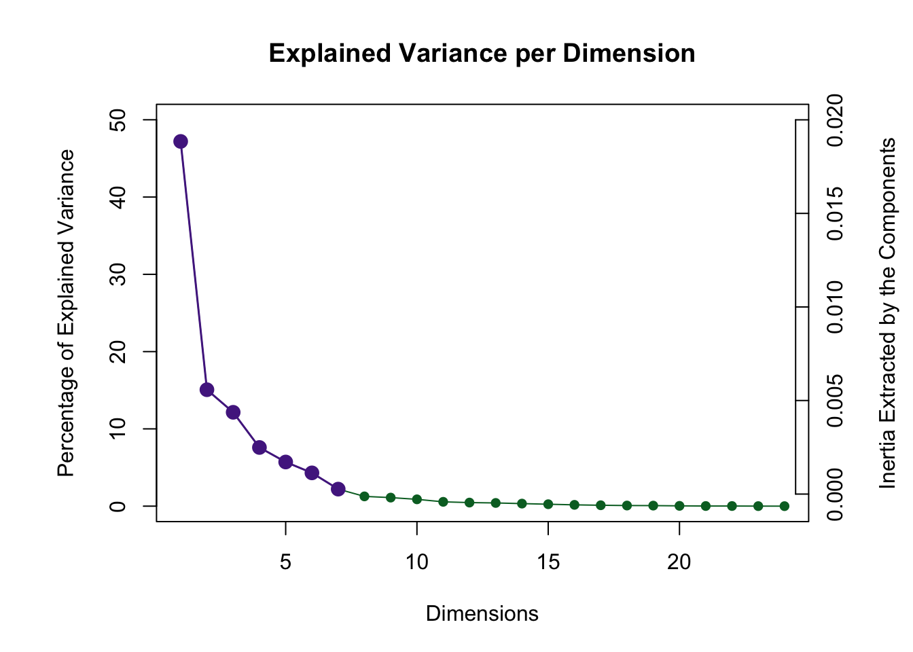
4.5 (Row) Factor Scores
Factor Scores in MCA are calculated in the same way than in CA, and like in PCA, correspond to the projection of a row (or column) onto a component.
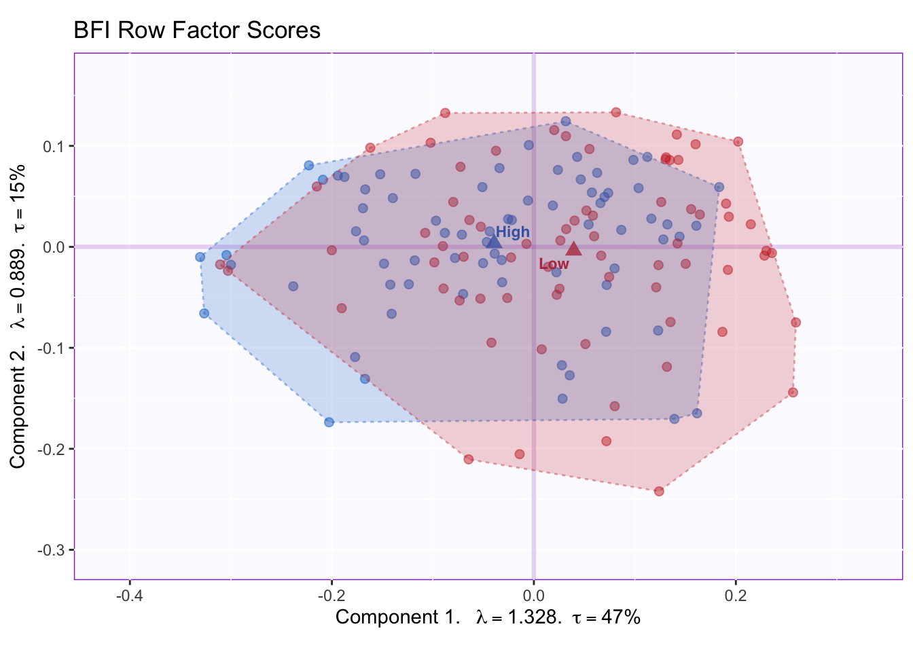
The plot for dimensions 1 and 2 shows that there is high overlap between the memory groups. Dimension 1 captures most of the variance 47%: this is a lot more than the variance captured by PCA on the first dimension (17%).

The confidence intervals show that the groups significantly differ on dimension 1. Graphing the factor scores for the columns will be more informative to interpret this component
4.6 Column Factor Scores
In the following graphs, gray is used to color variables whose contributions are not important. Thus, only colored variables should be used to interpret a component. 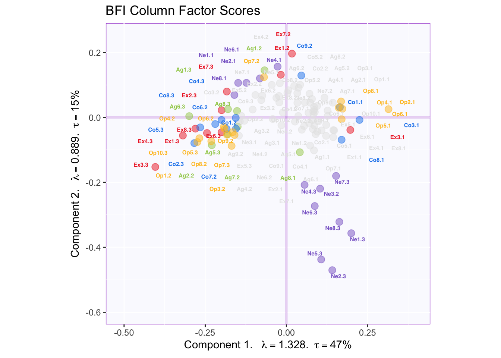
The graph shows that component 1 captures a mix of Extraversion, Openness, Conscientiousness and Agreeableness items, while component 2 reflects mostly Neuroticism.
4.7 Rotation
To compare with results from PCA, a varimax rotation is applied to the 7 significant components. What follows are the graphs of (row and column) factor scores for the rotated dimensions.
4.7.1 Dimension 1 and 2
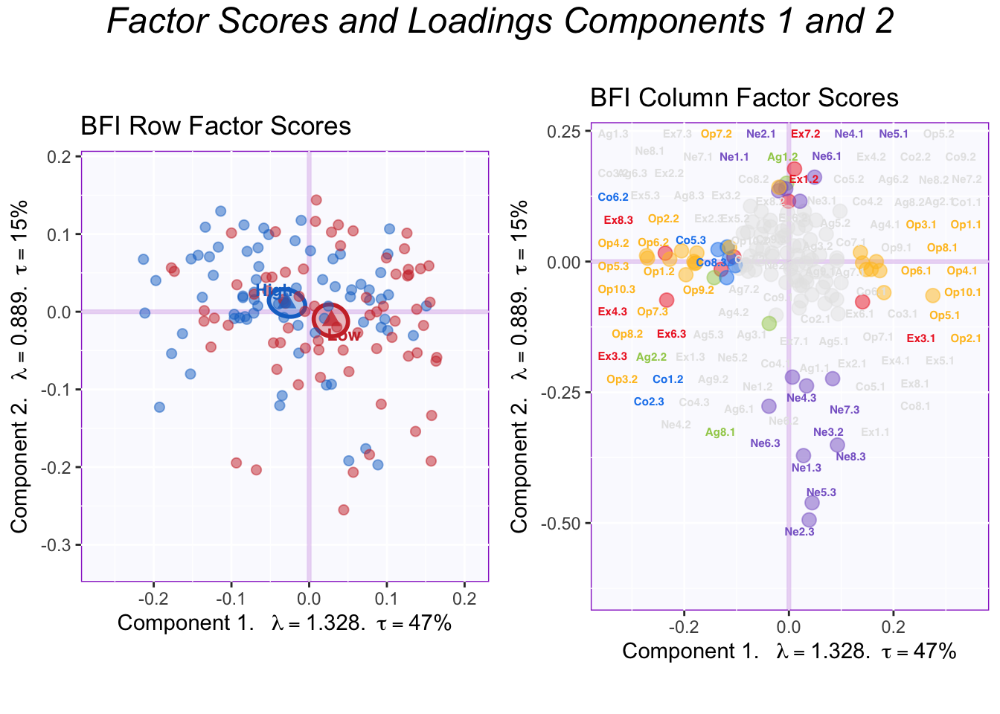
The rotated factor scores make intepretation clearer. Component 1 captures Openness while Component 2 captures Neuroticism.
4.7.2 Dimension 3 and 4
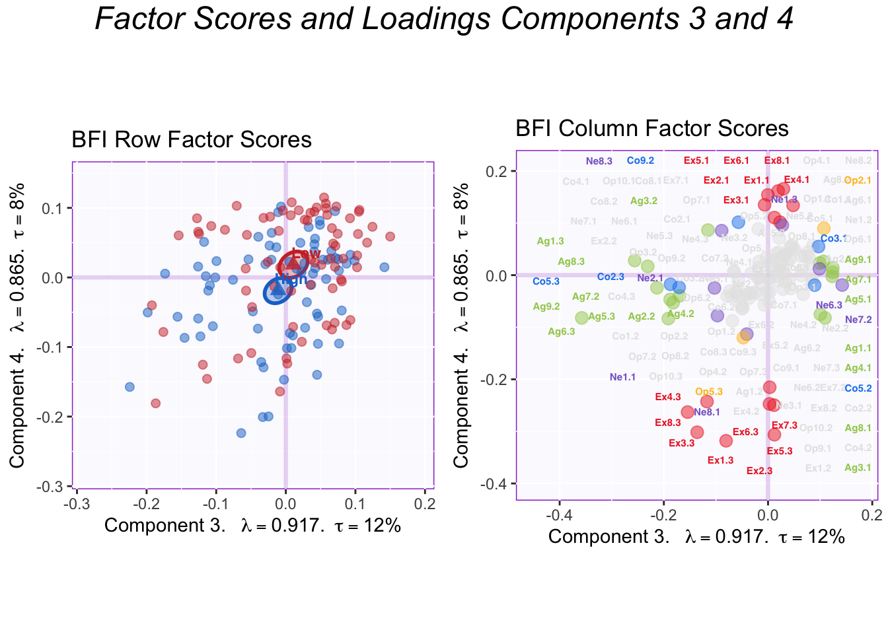
Dimensions 3 and 4 correspond to Agreeableness and Extraversion, respectively. Groups appear to differ on Dimension 4 (Extraversion), but effect is less clear than in PCA.
4.7.3 Dimension 5 and 6

Dimension 5 corresponds to Conscientiousness. However, it is unclear what dimension 6 corresponds from looking at this graph. It appears it might be a mixture of moderate scores in Neuroticism, Extraversion, and Openness.
4.7.4 Dimension 6 and 7
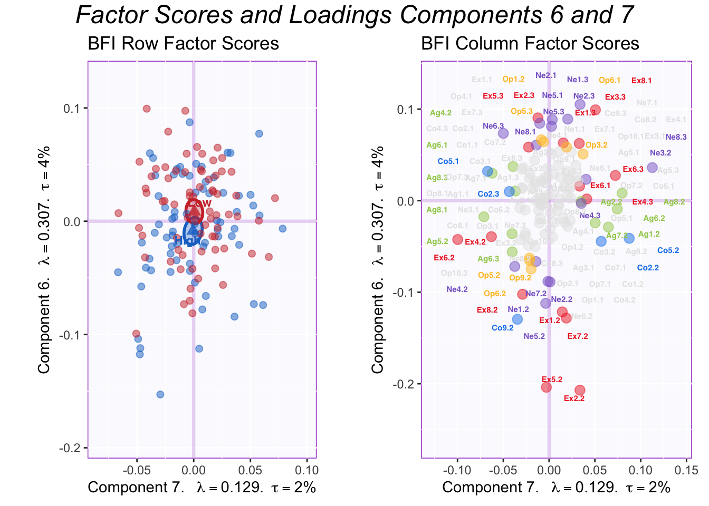
Dimension 7 seems to also capture moderate levels of personality, particularly, agreeableness and conscientiousness. Although this effect illustrates the differences between PCA and MCA nicely, the groups overlap in this dimension. Looking at this data in isolation, it is unclear whether these non-linear effects are merely an artifact of how the variables were binned.
4.8 Contributions
 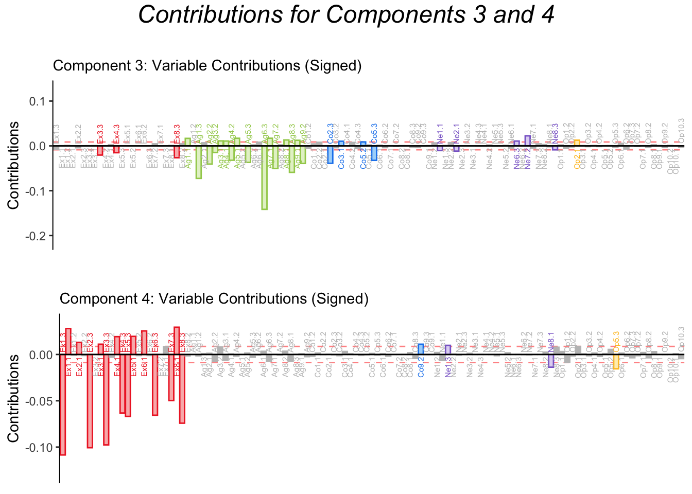
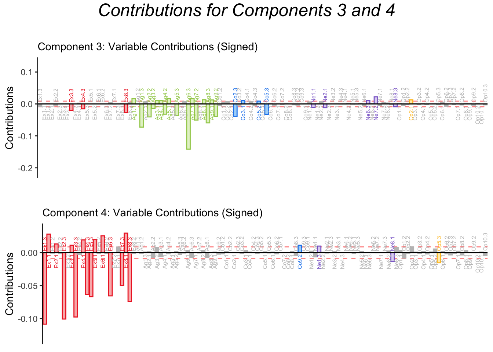

Contributions for dimension 1 to 5 confirm the pattern from the factor loading plots.
Contributions to dimension 6 seem mostly driven by Extraversion, while contributions to dimension 7 are mixed. Since Extraversion was more consistently binned into 3 groups, component 6 could represent an artifact steeming from our binning strategy. However, since all variables were binned using this criteria, MCA reveals that not all the subscales of the BFI are equally sensitive: the Extraversion subscale discriminates between different levels better.

4.9 Bootstrap Ratios
 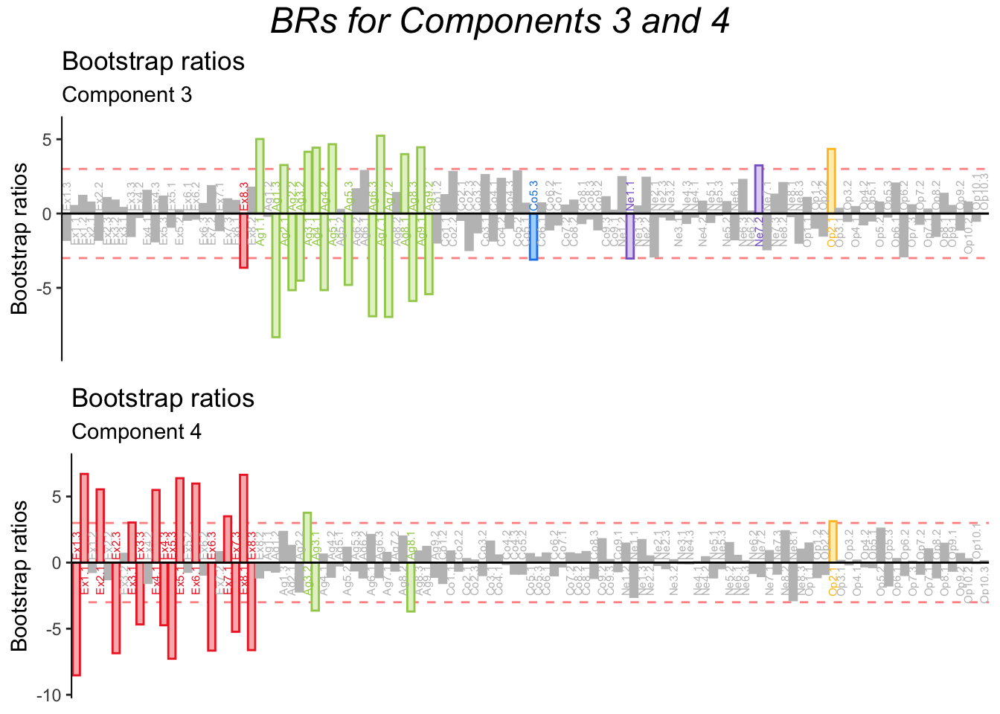
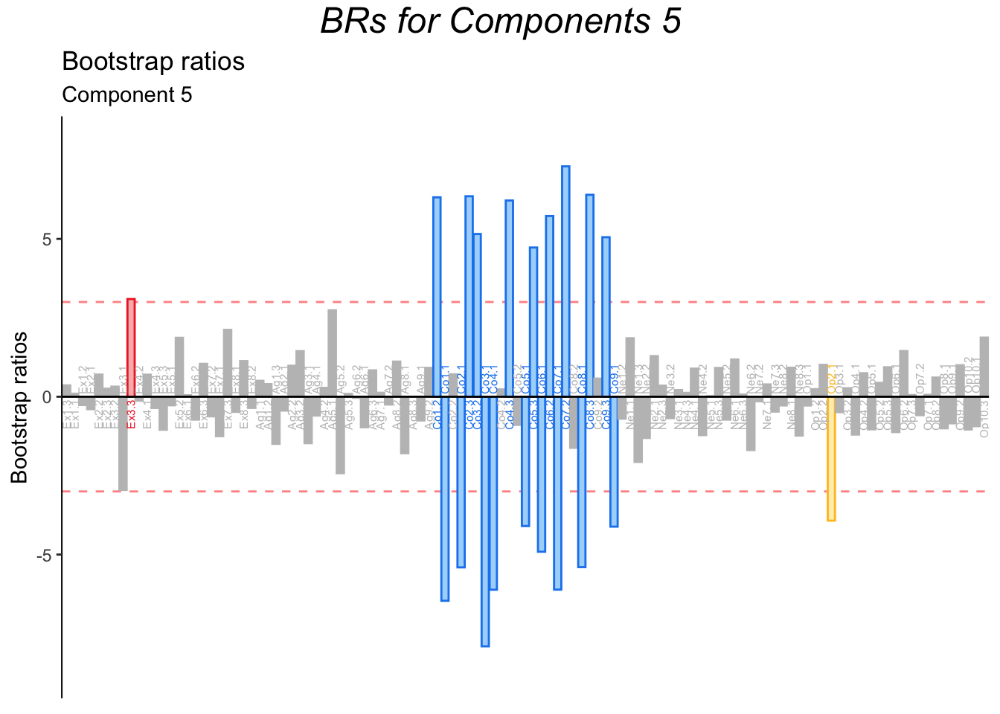
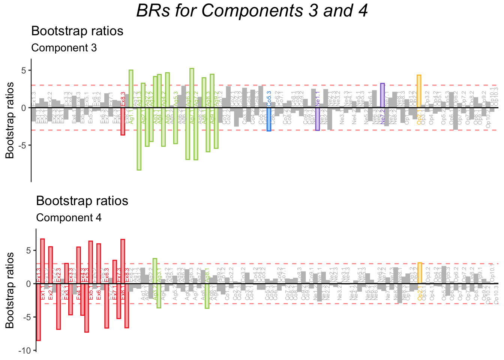
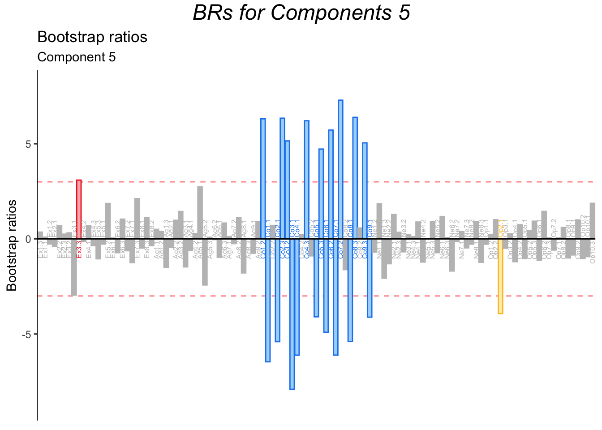

Bootstrap ratios confirm that all dimensions are stable, even dimensions 6 and 7. Therefore, MCA suggests non-linear effects of personality dimensions, and that the BFI might be more tailored to caturing non-linear effects associated with Extroversion.
4.10 Summary
MCA is an extension of CA used to analyze a matrix of observations by (nominal) variables. In this analysis, MCA replicated and extended the results from PCA. MCA revealed a non-linear effect of Extraversion. These non-linear effects of the BFI might be useful information when comparing performance with other personality scales or when further developing the BFI itself. If moderate levels of Extraversion (and other personality dimensions) differentially predict certain outcomes, then it would be beneficial to utilize a psychometric scale that can capture such effects.
However, the existence of non-linear effects did not particularly illuminate the data from the perspective of our main research question: ‘how are personality factors related to memory’? Therefore, if overlapping results like these were to be published, PCA would likely suffice, and perhaps be prefereable due to its wider accessibility.